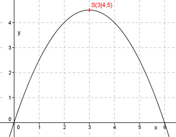

Aufgabe 28 Bestimmen Sie die Koordinaten des Scheitelpunktes S und der Nullstellen N der folgenden Funktion. y = -0,5x2 + 3x Scheitelpunkt : y = -0,5x2 + 3x |:-0,5 y ------ = x2 - 6x -0,5 Quadratische Ergänzung : y ------ = x2 - 6x + 9 – 9 -0,5 Mit x2 - 6x + 9 = (x - 3)2 y ------ = (x – 3)2 - 9 | *-0,5 -0,5 Scheitelpunktform : y = -0,5(x - 3)2 + 4,5 S(3|4,5) Nullstellen : 0 = -0,5x2 + 3x | :-0,5 0 = x2 - 6x 0 = x(x - 6) Das Produkt x(x - 6) wird dann = 0, wenn entweder x = 0 oder x - 6 = 0 1. Nullstelle bei x = 0 N1(0|0) x - 6 = 0 |+6 x = 6 2. Nullstelle bei x = 6 N2(6|0) 